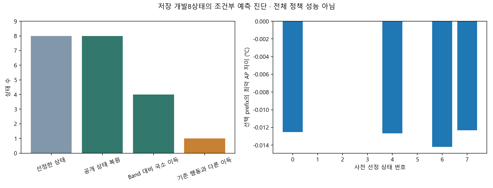

개발8상태 복원8·불명0. Band 대비 국소 예측 이득4, 기존 실행 행동과 다른 이득1. 예측170/상한792·새환경/학습/기기0. 전체 실행 성능·실제 폰 절감은 미확인.
판독·범위·재현 · 8상태 대조 · 모든 후보 예측 · 검증

| 상태 | 부하 | 기존 행동 | 새 선택 | Band 대비 AP 차이 | 추가 대안 |
|---|---|---|---|---|---|
| 0 | 낮은 부하 | 유한 대기 | 유한 대기 | -0.012530 | 없음 |
| 1 | 큐 몰림 | 즉시 단건 | 즉시 단건 | 0.000000 | 없음 |
| 2 | 순간 몰림 | 즉시 단건 | 즉시 단건 | 0.000000 | 없음 |
| 3 | 지속 부하 | 즉시 단건 | 즉시 단건 | 0.000000 | 없음 |
| 4 | 낮은 부하 | 유한 대기 | 유한 대기 | -0.012660 | 없음 |
| 5 | 큐 몰림 | 즉시 단건 | 즉시 단건 | 0.000000 | 없음 |
| 6 | 순간 몰림 | 즉시 단건 | 유한 대기 | -0.014200 | 있음 |
| 7 | 지속 부하 | 유한 대기 | 유한 대기 | -0.012322 | 없음 |
새 대안은 상태6의 0.25초 대기다. 현재 도착 탐지4건의 예상 응답은 각각 약250ms 늦지만 현재 기한 실패·긴급P95·J는 그대로이며 AP 예측은 약0.0142°C 낮다. 미도착 요청의 서비스와 전체trace 결과는 알 수 없다. 뒤에 실제 도착한 요청을 예측 입력으로 쓰지 않았다.